n this article we are going to tackle the 12 primary channels of Chinese Medicine as a single continuum. Once understanding this method of diagnosis it can transform your practice and your life. Within it lies layers of philosophy and imagery and a methodology to determine where any individual is within their journey at any given time.
This cycle can be used for any scale of time. It is a cycle of life, death and rebirth. It is generally taught in school with the meridian clock for a single 24H day, but it can also be used to gauge a single lunar menstrual cycle, or a double lunar cycle which is the time to create new blood cells. It can also be used to track a full year, like the growth ring of a tree or even one’s whole life, as the tree itself.
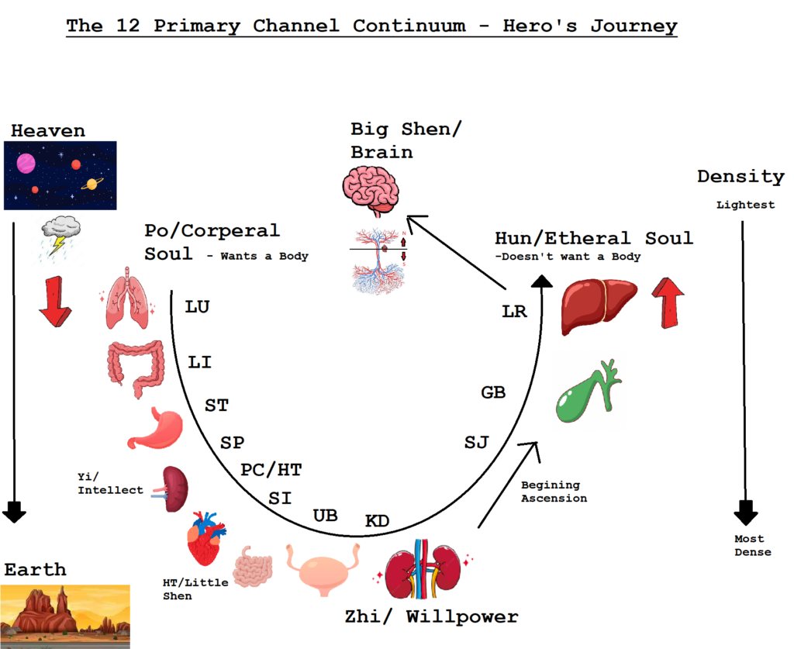The subject of the 12 Primary channels in Chinese Medicine is infinite because they are a system involving ever evolving cultivation. They are never fully understood,that type of knowing-it all-thinking is inherently naive. This article is here to attempt to define some aspects that have helped me cultivate myself to my own current level of ignorance. I will be adding pictures to help concentrate the knowledge.
Beginning with the Lungs. The first meridian of the twelve channel continuum.The Lungs are activated when we take our first breath in the world. We leave the warm comforting medium of the womb, traveling through the transport tunnel of the birth canal and by some measure of miracle we survive. Allowing the transformation into this density. Our watery home that surrounded us for nine months became replaced by a web of oxygen connected to the placenta of our ancestors.
The Lungs are how we take in oxygen. Without oxygen we die in minutes. Compared to a few days for water, and a few more days for food. Oxygen is essential for life. When we breathe in air it creates a direct connection to our Ancestors. It connects us to heaven.The charge that is in our air is the same charge that comes from the stars and our sun, and our sun’s sun. In an infinite cascade.
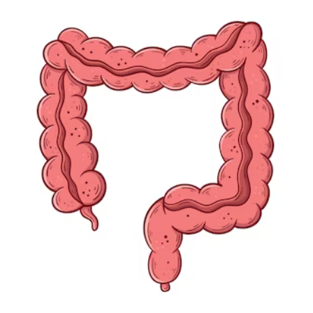The Lungs are the first channel connecting us to heaven. They take in Qi and Infinite Connection. The second organ in the meridian system is the Large Intestine. Within this series they may seem a little out of place, but with a little perspective they fit in quite nicely into the order.
The Lungs connect us to Qi itself and to Heaven above, and the Large Intestine connects us to Yin and Earth below. The Large Intestine creates physical manifestations within this world in the form of excrement from the body’s lower eye, the anus. The Lungs and the Large Intestine kick off the Hero’s Journey, as energy descends from heaven to earth, enters a human being, acting as a celestial medium between Heaven and Earth, until energy returns back up towards Heaven.
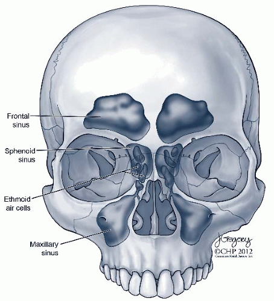The Lungs and the Large Intestine make a great pair of Above and Below, creating space for the rest of the channel systems. One very unique feature shared between the Lung and the Large Intestines is how they both serve as a reservoir for bacteria, the body’s microbiota. The Lungs holds the first vault of bacteria within the Nasal Sinuses within the skull. The bacteria are vacuumed into the nose in a spiral vortex formation, thus the name of the turbinate bones in the nose.
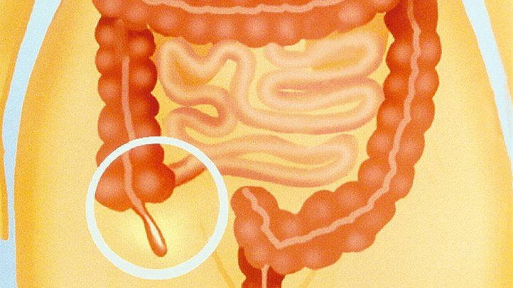The sinuses are like a cave. Acupuncture points are actually named Qi Cave in Chinese. The second reservoir of bacteria that we have within our human body is our Intestinal Appendix. Our appendix is a small appendage within our large intestine that acts like a seed bank for our intestinal microbiota. When we get sick and we purge, vomit, puke and have excessive diarrhea, afterwards because of our appendix we will still have a little starter biotics within us that contains all of our bacterial diversity. Everyone give a moment and thank your appendix right now!
These are the two major bacteria banks that control what bacteria are coming into and being held onto the body, and what bacteria and being held onto and let go by the body. One bank is at the beginning of the tract and the other bank at the end of it. By now we know how important the Gut-Brain-Heart axis is as it has risen in popularity in the last couple decades.
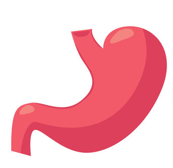The 3rd in the continuum and one of my most favorite channels is the Stomach channel. This channel holds so much wisdom that we will have to spend quite a little bit of time on it. One of the best ways to cultivate a relationship with a channel is to understand its function. So we have to ask, what is the channel’s function?
The main function of the Stomach is to digest food. With an emphasis on the digestion of Protein. This is extremely important. The stomach begins the breakdown of protein. That is the stomach’s primary function that no other organs can do half as well. Proteins are the building blocks of life, with these building blocks of life we begin to physically manifest our desires, we build them, give them shape and literally fold them together.
Within the Digestive Tract, the stomach is also most acidic of all of the organs. This is very important. It takes Heat to transform protein. For this very reason, protein is also used as an inflammation marker within the body.
In the realm of Chinese Medicine, Stomach Fire 🔺 is stomach acid. Proteins generate stomach fire. Fats and sugars smother stomach fire (which can eventually make it even hotter), vegetables and greens will cool and transport these stomach materials. Vegetables and Greens tend to be Alkaline in nature, the opposite of what protein generates.
Eating proteins increases Stomach Fire(Stomach acid). The Stomach is the beginning of Internal digestion. (The teeth are in the head, therefore still closer to the exterior of the body). The stomach is the first place that the body senses the external world inside the body in the form of food. The stomach is the beginning of the building up of intelligence in the body. Yet in this form it is still in a Primal state of intelligence. It is Primal because we are still at the beginning of the continuum. It has yet to make communication with many other organs.
The Stomach is the first channel to make connections to the brain at ST-8, which is named Heads Binding. This is why the channel deals with mania and emotional issues, because it is the first channel to gain access to the brain, while also being connected to the Spleen and the formation of new blood.
The Stomach is in charge of our desires. Excess desire creates excess Stomach Fire. When we have burning desires in our lives we will have fire in our stomachs. Even without eating proteins, strong desires will generate a person’s stomach fire. With this fire a person will be able to properly digest protein so that they will be able to manifest these desires physically.
Too much Stomach Fire can cause acid reflux and wear away at the protective layering of the Stomach. Stomach Fire can also be a natural way to protect the inside of the body from an external infection. By using drugs to remove acid reflux, it may pave the way for an internal infection.
As we break down the proteins, which is the stomach’s primary function, we then move it into the first part of the Duodenum of the Small Intestine. The Duodenum is the most acidic aspect of the Small Intestine. It is like this so it can handle the acidic juices that are being sent over from the Stomach. In this area the protein is further broken down by the digestive juices that are secreted from the Pancreas/Spleen and the Gallbladder. They are all needed for the digestive process to function. If they don’t want to secrete, there isn’t any proper digestion at all.
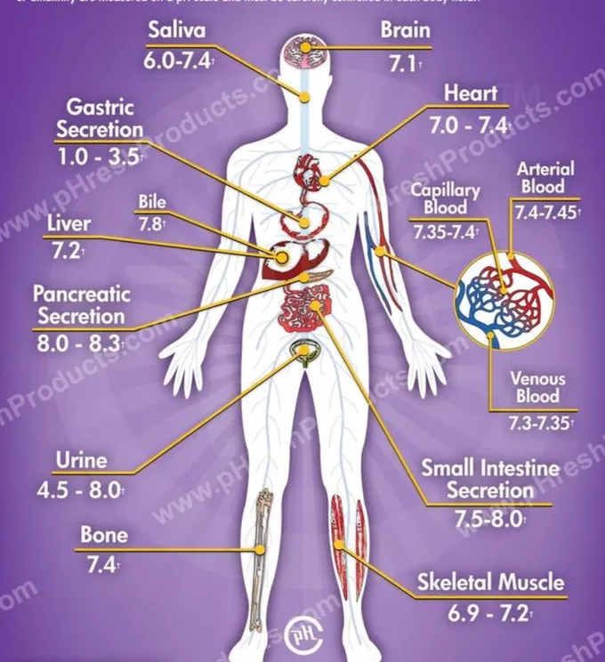Hopefully if all is functioning well, from the upper tract of the Small Intestine, these proteins/amino acids are absorbed into the blood. Anything onward as we go further down the intestinal tract will become more and more of an alkaline environment. This part of the Small Intestine will not be able to digest protein well, and any protein still undigested will resort to the process of Fermentation (ie, rotting) in an attempt to become transformed. Undigested protein in the lower aspects of the Small Intestine and the Large Intestine require fermentation which generates heat.
Not to mention, when protein is transformed through the process of low heat/fermentation it poorly separates the pure from the turbid during the process it creates whole slews of undesired by-products, such as urea, that will be absorbed into the blood and filtered out by the Kidneys, causing the Kidneys to do extra work, using more energy..
I cannot stress enough how important it is that the Stomach is digesting protein properly. It causes a whole series of downstream effects when the function is not utilized. All other aspects of the meridian system will have to pick up the slack as we move further and further into the continuum if the channel does not perform its function. Here our poor eating habits can really put a kibosh on our natural conditioning.
I repeat, the Stomach is where we first digest food, meaning to sense the outside world. It is connected to our primal emotions which contains our desires. Its function is to break down protein, and our Stomach acid is our Stomach fire. It is easily one of my favorite channels, it is a fountain of wisdom.
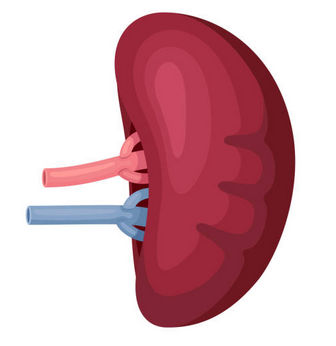The next and 4th channel within the primary channel continuum is the Spleen. The Spleen is a highly connected organ within the body as it is so intricately connected to many other channel systems. It is actively connected to the sinew channels, to the divergent channels as a primary lymphatic organ, and to our essence and marrow by gaining access through our lymph. Just to name a few.
We will talk about how the Spleen has the ability to Bank the Blood. We know that the Shen lives within the blood, and the Shen contains our emotions. With this we are able to deduce that the Spleen Banks the Emotions. The Earth element, the Spleen and the Stomach are in control of the Yi-the mind/the intellect. Thinking is not an emotion. We often use the word pensiveness for over thinking in colloquial TCM language, but overthinking and thinking are not an emotion.The Stomach and Spleen are the beginning of the intellect.
This is a very important fundamental idea to grasp. The Spleen banks our emotions. Our thoughts bring our qi/awareness to where we focus it. This is how our muscles fill up with blood so that we can do activities. When we think about doing an activity we send our qi there, and our blood follows our qi. This can happen by our conscious or subconscious thoughts. In awareness or unawareness.This can happen by our conscious or subconscious thoughts. In awareness or unawareness.
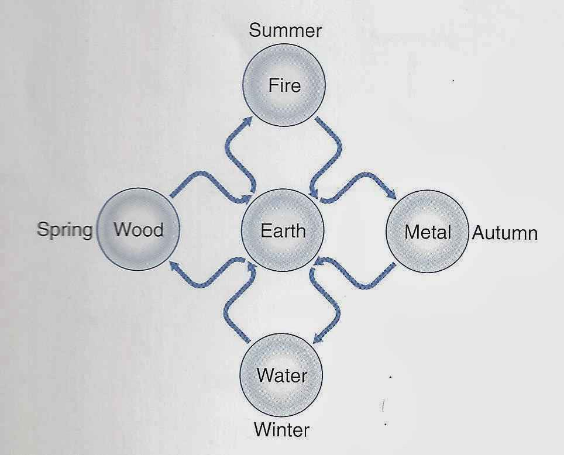The Spleen and its lack of attributed emotion is much better understood when looking at the Cosmological Cycle of the 5 elements versus the Pentagram Cycle of 5 elements. Not knowing about the Cosmological Cycle can easily cause oversight when teaching about the Spleen.
The Spleen and Stomach are responsible for so much! Just like food needs to be digested, thoughts and ideas also need to be digested. In fact our thoughts are often represented by the physical food within us. In this way a person that is unable to let go of certain ideas or feelings has constipation. Or a person that overthinks ideas over and over and over again has dry over processed poop in the form of sheep pebbles. Our thoughts also need to be digested within the body. Or a person that overthinks ideas over and over and over again has dry over processed poop in the form of sheep pebbles. Our thoughts also need to be digested within the body.
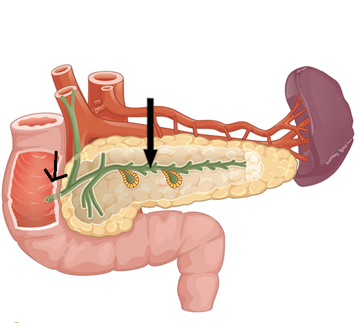This is where Spleen has great significance. Our pyloric sphincter is a valve that secretes digestive hormones from our pancreas-spleen into our Duodenum. These juices also mix with bile from our Gallbladder. If the pyloric valve doesn’t want to open there is no digestion. Or at least quick digestion. The body will resort to the slow and long process of fermentation. The food will be held onto longer in the body as the individual slowly processes all of the ideas.
This means the Spleen is in charge of when it wants to metabolize food and when it does not want to metabolize it. Remember that phlegm within the body is just unmetabolized experience, and that fat is just stored potential. The spleen is also connected to the lymphatic system, which has access to many of the body’s unresolved issues. Making it a highly intelligent organ. If the person is full of edema or is carrying unresolved phlegm, perhaps the Spleen doesn’t want to resolve it at this time.he spleen is also connected to the lymphatic system, which has access to many of the body’s unresolved issues. Making it a highly intelligent organ. If the person is full of edema or is carrying unresolved phlegm, perhaps the Spleen doesn’t want to resolve it at this time.
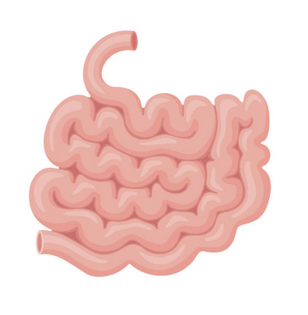The Small Intestine is the 6th meridian, the organ that begins to provide feedback. I mentioned this briefly in the statements above about the Stomach, because the Stomach feeds into the Duodenum of the Small Intestine they are closely related. The Small Intestine is a much more Alkaline environment as compared to the Stomach. Here is where the body primarily digests its sugars and fats.
In an alkaline environment it digests sugars and fats properly without generating too much heat. If there is too much protein entering from the Duodenum deeper into the Small Intestinal tract, which are unresolved aspects of passion being carried over from the Stomach, they will cause the Small Intestine to generate heat from fermentation. If this happens chronically, the wrong types of microbiota will move into the Small Intestine, slowly turning the environment of the microbiota acidic, generating more heat.
This heat will cause more and more blood to be used for digestion, and also not allow the proper gut bacteria to do its magic. The Small Intestine is the gateway into the Cardiovascular system. The cardiovascular system is the Domain of the Heart, but it is also how we gain access to the actual heart. I will also have to write another article on the magic of the Small Intestine.
As we move into the blood, the circulatory system, the small intestines yin/yang pair, we eventually will make our great return to the Heart. Before we get there, we will have to make a stop at the Water element, the Urinary Bladder and the Kidneys.
The Urinary Bladder and the Kidneys are the 7th and 8th meridian within the 12 channel continuum.The Urinary Bladder acts as a filter, using urination to clear out any aspects that are no longer desirable in the blood. Though it is the Kidneys themselves that act more as a filter, and the Urinary Bladder is more of a temporary holding space. Anything that
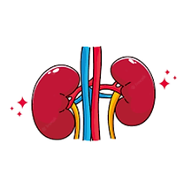has been created by the Stomach, processed by the Small or Large Intestine and made its way into the blood, now needs to be processed by the Kidneys. Any toxins or undesirable materials along the way need to be filtered out. It all has a downstream effect.
The kidneys maintain the acidity and the alkalinity of the blood. They do this by controlling electrolytes within the blood and maintaining its electrical charge. Charge equates to acid and base mathematically. When you begin to have heat in the blood (high acid) the kidneys will alkalize it. It does this by stealing calcium and phosphorus from the bone. Calcium and phosphorus are both great alkalizers. If we have bloodheat for too long we steal materials from our bones to cool it off.
You can follow this mechanism anywhere in the body where there is chronic heat and inflammation. The body will use its stores calcium and materials from the bone, minerals to absorb the heat and alkalize the area. We use the exact same method in Herbal Medicine. Though the body naturally does it first. Over time this chronic heat will become calcification. Calcium and minerals are the densest materials here on Earth. The Kidneys govern the Jing/Essence, the densest materials of the body.
With chronic inflammation ligaments will become calcified. We often see this in patients’ feet or in the spine. But the same pathology also causes calcification in brain tissue as well. Proteins equate to acidity, and acidity equates to heat. Protein is an inflammation marker. Always follow the protein. To clear and to remove protein you need heat, and the body reacts to too much heat with calcium. It is a feedback loop when a person is unable or undetermined to resolve their issues over time.
I will talk more about the Kidneys in my 8 Extraordinary Channels, the channels of Ancestry and my 6 Extraordinary Organs article. Refer to them for more information. The Kidneys govern the bone. The bone is the most dense material of our body. Minerals are the materials within ourselves closely resembling the Earth itself. Our bone is our life force as a concentrate. Our bones are also raw, stored, infinite potential, it creates the map and the hologram for our future existence.
Our bones, governed by our kidneys, are where our bone marrow is located. It is also where we generate new blood cells, and where our progenitor stem cells are located. The most implicate order of our hologram is stored within our bone mineral matrix. It takes the longest to grow within our human bodies. This map unfolds itself into existence. Our marrow is where we have direct contact with our Blood Lineage Ancestors, but also all the Soul Family incarnations that have incarnated within it. This makes our bone marrow rich and infinitely valuable as a resource.
Our personal, social, family, society and global engineering has shaped our DNA expression over thousands and thousands of years. Our bone marrow, and our DNA within the nucleus of our cells contains our genetics. Our genetics is a story, just like a long tapestry. It contains our family tree. A person without history is like a tree without roots. It is time that we remember our history.
With our intention, if we bring our awareness into the level of our bones and marrow, we can restore our consciousness to a level of consciousness that has lain dormant for epochs of light. We can access our DNA and all of our genetic blueprint ancestral information.
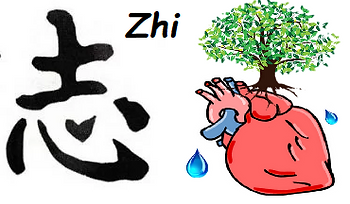There is a reason that the Kidneys are spiritually in charge of the “Zhi”, known as the “Willpower”. If you refer to my image at the beginning of this article, I am now beginning to articulate about the story. We have descended from Heaven to Earth. The Kidney meridian represents the closest meridian we have in contact with the earth. It is the lowest of the low and the densest of the dense. Kidney-1, Gushing Spring, the first acupuncture point on the channel is located directly on the bottom of the foot. It is telling a story.
The Kidney meridian needs Willpower because this is when we begin to fight gravity. This is where we need to raise what has fallen to the Earth back upwards towards Heaven. This takes effort and strength and this is what is the essence of the Hero’s journey. Physically if someone does not have willpower you will see edema of the lower legs. Described in the image below as rain from heaven filling up the basin that is the pelvis. Without proper Willpower to accomplish our dreams this water accumulates within us and never be transformed.
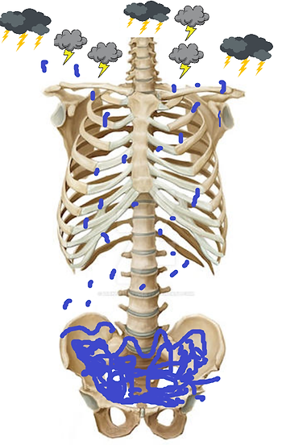Rain, Thunder and Lightning comes from our Lungs connection to Heaven. Consider the acupuncture point LU-2, which was originally the first point of the entire system. LU-2 is named Cloud Gate. It is the beginning of the Hero’s Journey. The rain from these clouds accumulate in the Kidney channel because that is the bottom of this deep well. Can you dip your bucket down in your own well, pull it back up and begin the process of self nourishment?
Your kidneys are needing Willpower/Determination, to bring our Yuan Qi, our Essence up the back shu points which are located along the spinous processes of our back. They are transformed and Transported with the help of our Life Gate Fire (Connected to our Pericardium and Heart Meridian – 9th Meridian in continuum), which comes from our core in our Lower Dantien.
The back shu points were originally belonging to the Kidney channel. They bring energy up from Earth. Whereas the Bladder points originally brought energy down from Heaven. Without directly discussing this trajectory too much, the inside back shu/transporter points brought energy up from the Kidneys, and the outside points which are points of cultivation wouldbring energy down from the head, down the Urinary bladder channel.
Well, back on point here. Like a football, the rising energy of the Kidneys will travel up the back, and pass the energy as it goes internally to the Triple Burner/Sanjiao, the 10th meridian in the 12 channel continuum. The Triple Burner/Sanjiao brings the yuan qi/essence to its proper Internal Organ so it can activate its function. This energy eventually comes out of the Shu Stream points, the 3rd acupuncture point on each meridian. Typically near the joint.
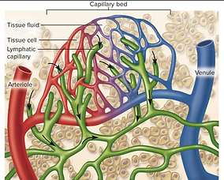The Triple Heater really represents the space between. It is like the wet bank that lines the river, or thin wet coat of water that attaches to a tree after a rain. We can see it as the moisture from the fog which has been evaporated by heat. It works in as many ways as water manifests in nature. Once our fluid interacts with heat, the fluid that is inhabiting the interstitial spaces can provide nourishment in the form of fluids to all the materials that surround it. The heat will enable this steam to rise upwards.
One of the Triple Heater’s main elements is Water, even though it’s a Fire Channel. If you investigate the channel’s point names linearly you will discover its story. The Triple Heater is the connection between Fire and Water. It is evaporation that once again returns water back to the clouds. When the Triple Heater is dry from chronic diseases you will see pathological fire. This fire causes necrosis and fibrosis of the tissues. It causes waste materials to be left behind.
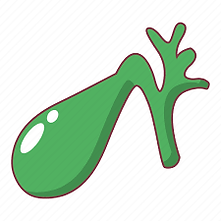The last two channels of the 12 channel meridian continuum are the Gallbladder and the Liver, the 11th and the 12th in the 12 Channel Continuum. These two organs hold a very special meaning within the sequence. These two organs are the organs of Reincarnation and Incarnation. Asking us, “Will I choose to do something over again or have I had enough of the experience?” They are also the channels of limitation as they create a definitive form.
The Gallbladder has two very important functions. One is that it acts as the gateway between the Primary Channel system and the 6 Extraordinary Organs. It is the only organ that is both a Primary Channel and an Extraordinary Organ. This is the gateway.
It also stores bile and is in charge of its secretion of bile. Bile is very important for transformation. Without the Gallbladder we would not be able to break down fat cells. Fat cells are Stored Potential. Bile breaks down fats into fatty acids, and fatty acids are going to become processed by the Liver, where the Liver will choose if you have found completion within the experience.
The Gallbladder is the magical organ of transformation. Remember its ability to combine with the Spleen’s Secretory juices? Without Bile we could not digest food or our thoughts. This is why the Gallbladder can be related to Fear, or to “Shyness”, because it is incharge of transformation, and if you don’t have the gall to do it, it will not be done.
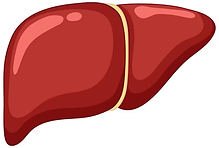Looking at the Liver, the 12th and last organ of the 12 channel meridian continuum from a primary channel perspective. The Liver is the organ that I have found gets the most slack from every single practitioner that I talk to. It is always Spleen this… or Liver that… and I will say it again. The Liver gets too much slack. It was never meant to be a factory that never shuts down. It needs paid days off.x
The Liver is in charge of cleaning up every other organ’s mess within the continuum. It literally has to sort out the downstream effects from every other organ. It can be messy and it often needs to run on overtime.This is why it is also called the Warlord, because it has to force events to happen that need to happen
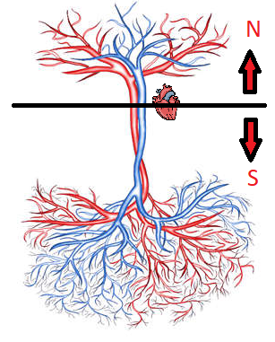The reason for this is that the Liver is the LAST stop that our blood makes before it returns to the Heart. This is a big responsibility. The Liver is responsible for the last purification process of the blood before entrance back into the Heart. This is important for multiple reasons, but possibly the largest of them all is that from the Heart the next stop that the blood is going to make is the Brain
The filtrate of blood that directly exits the heart has almost direct access to the brain. The cleaner and the more pure the blood at this point in the continuum the better. Ideally we want less toxins and waste material being processed. The brain is a tightly regulated headquarters. There is an intensive process for anything that enters or exits the brain. This costs energy.
Though this story I have told is still incomplete at this point in time. It is very important that I add that when the pure or refined blood of the Liver enters the Heart, it then combines with the old lymph from the Lymphatic System, that is draining in from the thoracic duct. Into the Heart The body needs to recycle the plasma in the lymph to be reused as filtrate for the cerebrospinal fluid.
If a person has chronic health issues and their lymph has become toxic, it is at this stage that the toxicity will combine with the Heart blood and be pumped into the brain. This is once the Liver can no longer maintain the upkeep.
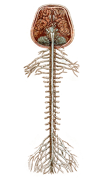This leads to brain inflammation, foggy memory, Alzheimer’s and diseases such as Parkinsons. Any brain deterioration disease. The heat that gathers from waste accumulation will eventually cause meningitis. The meningitis will spread to the cerebrospinal fluid pumping up and down the back, which will in time cause demyelination of the nerves.
The Liver is so very important as it is the gatekeeper of the fresh blood to the brain. We must take care of our blood and our experiences. We must be conscious of what is accumulated inside of our blood and our lymph. We must see how much we are out of synchronicity our desires are with nature, how out of tune with the dao we are. That is what the Divergent Channels and the Lymphatic System represent, how much we are out of sync with nature.
Our lymph is part of our immune system and our immune system helps to maintain borders. Our immune system is defining what our bodies considers as “self” and “not-self”. It helps us define who we are by creating our own boundaries, and it is our boundaries that defines us as an Am. When we have autoimmune issues it means that we don’t know where Nature ends and where Self begins.
This is also why we see a massive Autoimmune endemic happening all over the world right now. With the continuing loss of our history, traditions and culture, whole countries don’t know who or what they are anymore. The body whether State or Human doesn’t know how to build itself. You cannot build that which doesn’t have a clear plan. What we are seeing is a loss of sense of self on a country or planet wide level and this is an autoimmune issue.
It is time to appreciate our Liver’s as the last meridian within the continuum. The liver is the last organization of blood before entering the Heart, and the gateway for new blood, which is mixed with our old lymphatic fluid to enter our Brain. Add a touch of Bile for resolution.
I have recently come to conclude that the 6 Extraordinary organs act as a continuation for this pathway that extends from the Brain. Picture attached below. You can find out more by reading my article on the subject matter.
In conclusion, you may find vast appreciation for the 12 Primary Channel Continuum as I have. It has become somewhat of a lost art that is seldom taught. (Jeffrey Yuen still teaches it from Daoist Traditions, I really recommend his 12 Primary Channel course) It is such a profound system for diagnosis, and it is the channel system that we study and use the most. Often knowing the least about.
I would like to see a resurgence of its use, because if you know how to use the Primary Channels continuum in conjunction with all other Channel Systems –> the Sinews, Divergent, Luo, Extraordinary Vessels and Organs, you will find a vast array of interconnectivity within the body. It is a biological highway.
The continuum is part of the river system and the ecology of our bodies. The rhythm and dance of everything within us that cycles in a never ending continuum. It is time we reawaken to the great stories that lie sleeping within us and let them flow with the ever radiating compassion that flows from our heart.
May our Hearts reach the Ancestors contained within our Breathe, and also stretch towards our Descendants that are contained within our Bone. Allowing them to be in synchronicity, coherence and harmony with each other. This article has now turned into a prayer to create the infinite.
Lookout as I publish more on this continuing series of the Channel Systems of Chinese medicine.